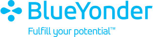
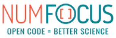
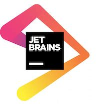
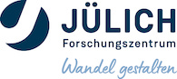
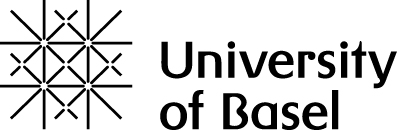

Current Sponsors
Platinum Sponsors
|  | The Blue Yonder is the world leader in digital supply chain transformations and omni-channel commerce fulfillment. Our end-to-end, cognitive business platform enables retailers, manufacturers and logistics providers to best fulfill customer demand from planning through delivery. With Blue Yonder, you’ll unify your data, supply chain and retail commerce operations to unlock new business opportunities and drive automation, control and orchestration to enable more profitable, sustainable business decisions. Blue Yonder - Fulfill your Potential™ |
|
|
ZEISS is technology. ZEISS is optics and innovation. Our over 38,000 colleagues develop, manufacture and sell highly innovative products and solutions for our customers in a variety of business fields, generating revenue of over €8.8 billion. As one of the world’s top technology companies, ZEISS has with a portfolio aligned with future growth areas like digitalization, healthcare and Smart Production, and a strong brand to boot, ZEISS is shaping the future far beyond the optics and optoelectronics industries. |
Financial Aid Sponsors
|
|
The mission of the Python Software Foundation is to promote, protect, and advance the Python programming language, and to support and facilitate the growth of a diverse and international community of Python programmers. The majority of the PSF’s work is focused on empowering and supporting people within the Python community. The PSF has active grant programs that support sprints, conferences, meet ups, user groups, and Python development efforts all over the world. In addition, the PSF underwrites and runs PyCon US, the primary Python community conference. Being part of the PSF means being part of the Python community. Recently we changed the PSF to an open membership organization, so that everyone who uses and supports Python can join. To learn more, visit https://www.python.org/psf/membership. |
|  | NumFOCUS is a nonprofit organization providing foundational support to empower the open source scientific computing ecosystem. We envision and work toward an inclusive scientific and research community that utilizes actively supported open source software to make impactful discoveries for a better world. |
|
|
The EuroPython Society (EPS) is a Swedish non-profit organization which organizes EuroPython conferences, supports the Python community in Europe and holds the rights to the EuroPython conference series and trademarks. |
Maintainers Sponsors
| Headquartered in New York City, Dataiku was founded in Paris in 2013 and achieved unicorn status in 2019. Now, more than 1,000+ employees work across the globe in our offices and remotely. Backed by a renowned set of investors and partners, including CapitalG, Tiger Global, and ICONIQ Growth, we’ve set out to build the future of AI. Dataiku is the platform for Everyday AI, systemizing the use of data for exceptional business results. By using data and AI an everyday behavior, Dataiku unlocks the creativity within individual employees to power collective success at companies of all sizes and across all industries. Don’t get us wrong: we are a tech company building software. Our culture is even pretty geeky! But our driving force is and will always remain people, starting with ours. |
Software Sponsor
|  | At JetBrains, code is our passion. Ever since we started, back in 2000, we have strived to make the strongest, most effective developer tools on earth. By automating routine checks and corrections, our tools speed up production, freeing developers to grow, discover and create. |
Gold Sponsors
|
|
Throughout its 125-year history, Roche has grown into one of the world’s largest biotech companies, as well as a leading provider of in-vitro diagnostics and a global supplier of transformative innovative solutions across major disease areas. At Pharma Research & Early Development (pRED) in Basel, it has more than 1800 dedicated scientists, clinicians, engineers and technicians from almost 60 nations, sharing the passion for developing and bringing new and effective medicines to patients. |
Bronze Sponsors
|  | Conducting research for a changing society: This is what drives us at Forschungszentrum Jülich. As a member of the Helmholtz Association, we aim to tackle the grand challenges of our times. How can we make a success of the energy transition and mitigate the effects of climate change? What challenges are emerging due to the increasing digitization of our society? Will we succeed in understanding the human brain? And how can we facilitate the transition to a bio-based sustainable economy? Come and work with us at our scientific institutes, in our technical or administrative infrastructure, or in research management alongside roughly 7,100 colleagues at one of Europe’s biggest research centers and help make a contribution to solving societal challenges. Help us to shape change! For more information on career opportunities, visit www.fz-juelich.de/en/careers. |
Institutional Sponsors
|  | The University of Basel has an international reputation of outstanding achievements in research and teaching. Founded in 1460, the University of Basel is the oldest university in Switzerland and has a history of success going back over 550 years. Today, the University of Basel has around 13,000 students from over a hundred nations, including 2,900 PhD students. |

|
The Python Software Verband e.V. represents the Interests of users of the open-source programming language Python in Germany, Austria and German-speaking Switzerland. |

|
Python Academy is a specialized Python training company. It offers open courses for individuals as well as customized on-site courses for companies and institutes. It covers a wide range of Python topics from introductory to advanced, Python for scientists and engineers, big data, web development, code optimization and many more. In addition to training, it consults companies that migrate to Python and develop high-quality Python software often in combination with training. The special expertise of the academy is scientific and technical software development with Python. |
Become a Sponsor
See guidelines on how to become a sponsor here.